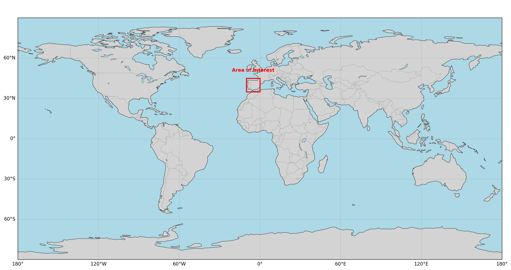
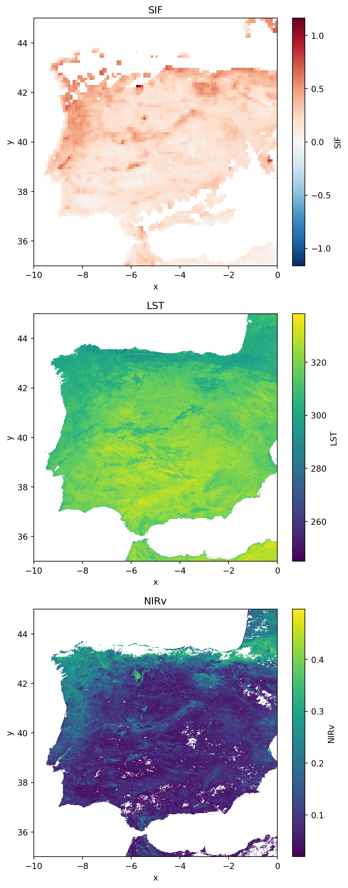
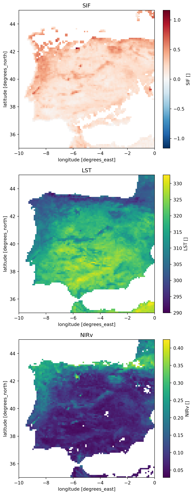
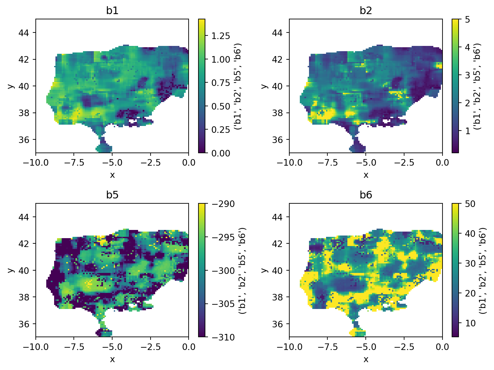
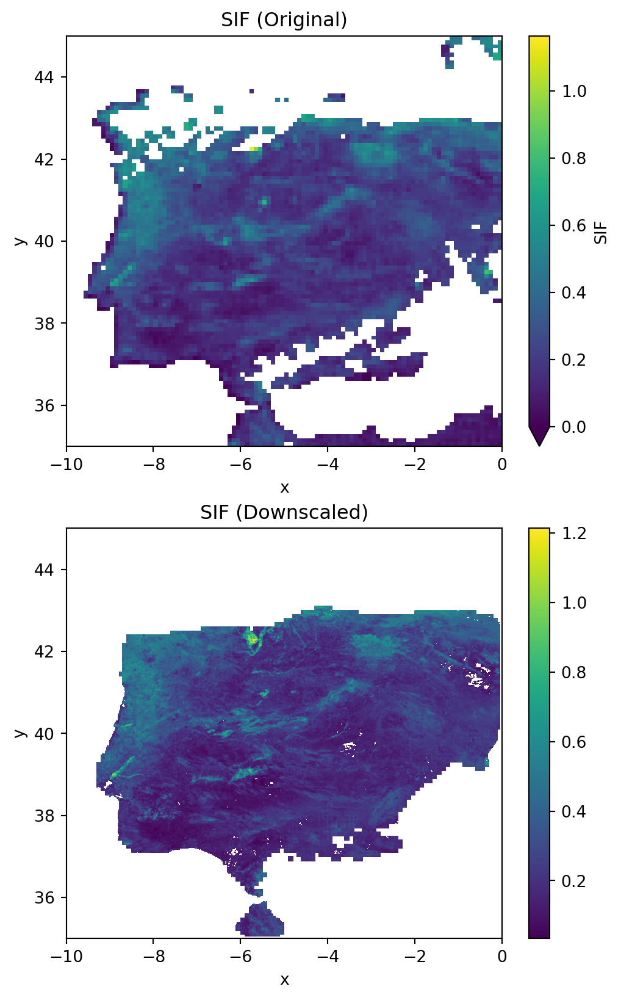
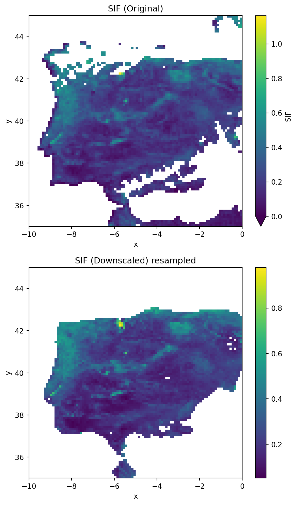
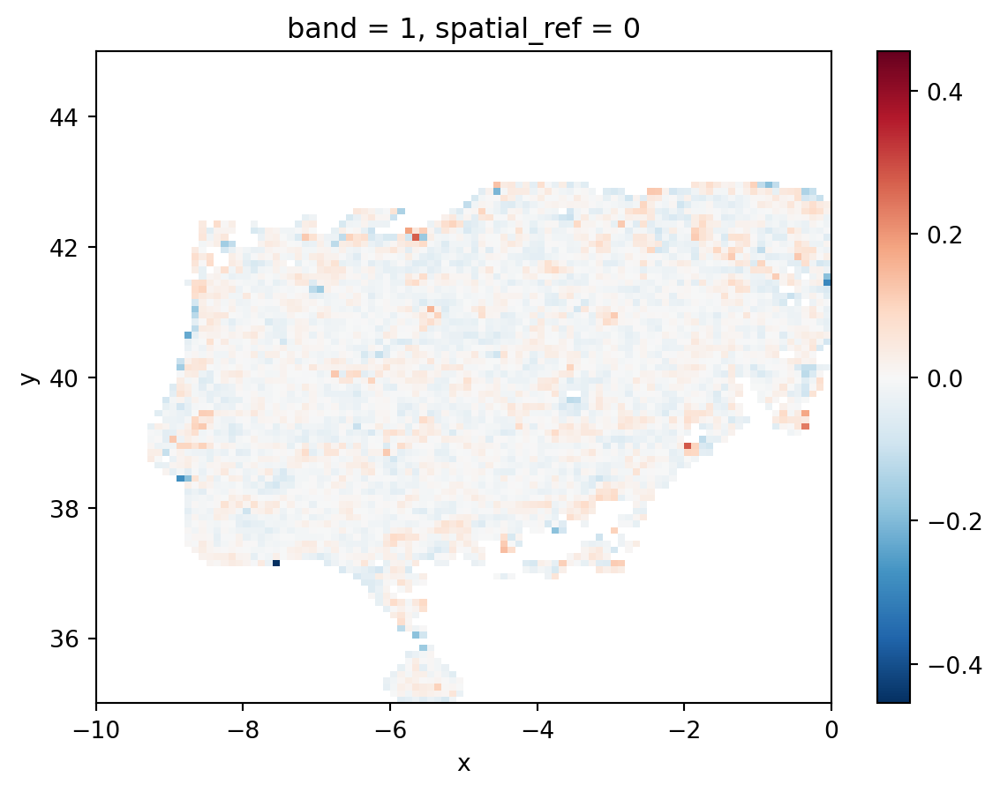

import openeo
import rioxarray as rio
"""
Currently there is an issue with openEO back-end that doesnt allow us to upsample datacubes (For more details see [here](https://forum.dataspace.copernicus.eu/t/how-to-spatial-upsampling-when-using-resample-cube-spatial/4358/6)). For this reason we will need some other libraries to process the parameters cube locally, perform a spatial upsample, create a stac catalog and publish the file and catalog on github.
This is needed to create a STAC item for the upsampled parameters:
"""
import pystac
from pystac.extensions.projection import ProjectionExtension
from pystac.extensions.eo import EOExtension
from datetime import datetime
from shapely.geometry import box, mapping
import json
import subprocess
# For data visualization
import xarray as xr
import matplotlib.pyplot as plt
# For spatial resampling
import xesmf as xe
import xarray_regrid
import numpy as npSIF Downscaling using OpenEO and the Copernicus Data Space Ecosystem (CDSE)
Introduction
In the following example we will Downscaled (Increase the spatial resolution) of Sun Induced Fluorescence product derived from Sentinel-5p TROPOMI sensor. A full workflow diagram is presented here: XXXXX
Libraries
We will need the following libraries to run dowscaling processor
Area of Interest and Time Period
Before going into the details of the datasets, we need to define an area of interest and time period for our analysis. For this example, we will focus on the Iberian Peninsula during the time period between 2023-07-17 and 2023-07-23.
spatial_extent_prototype = {
"west": -10.0,
"east": 0.0,
"south": 35.0,
"north": 45.0,
}
temporal_extent_prototype = ["2023-07-17", "2023-07-23"]
Connecting to CDSE using openEO
To connect to the openEO insfrastructure in the CDSE we need to create a connection:
Important
If you’re using Positron to run this tutorial please first open the authentication.ipynb notebook run the cells there, and follow the instructions. This step is only necessary once, the next time you run the cells of this tutorial openeo will use refresh authentication tokens.
connection = openeo.connect(
"https://openeofed.dataspace.copernicus.eu/"
)
connection.authenticate_oidc()Authenticated using refresh token.<Connection to 'https://openeofed.dataspace.copernicus.eu/openeo/1.2/' with OidcBearerAuth>This will open a tab in the web-browser where the user needs to authenticate using the CDSE credentials. For more details on openEO in CDSE please see: https://dataspace.copernicus.eu/analyse/openeo
Then we can see the data collections that are available:
connection.list_collections()Variables
For this tutorial we will use the following datasets/variables:
Target:
| Variable name | Collection | Band Name | Spatial resolution |
|---|---|---|---|
| Sun-Induced Flourescence | Dong Li SIF | SIF |
5 km |
Currently there are two SIF gridded products derived from Sentinel-5p that are availables:
S5P-PAL SIF. This product is generated by the Sentinel-5P Product Algorithm Laboratory (S5P-PAL) and contains modified Copernicus Sentinel data processed by S[&]T. Unfortunately, the current (at least at: 2025-12-01) STAC dissemination only include plain netcdf files and not cloud optimized data format. Currently the Atmosphere Virtual Lab project is working in provided zarr datacubes for the L3 products, including SIF.
Dong LI SIF. This product uses an artificial neural network to retrieve SIF from Sentinel-5p observations. Thanks to Dong Li for provinding us with a gridded example of the product and the stac item necessary to ingest the product in the openEO-CDSE infrastructure. This files can be found in the data directory of the repository.
Predictors:
| Variable name | Collection | Band Name | Spatial resolution |
|---|---|---|---|
| Land Surface Temperature | SENTINEL3_SLSTR_L2_LST |
LST |
1 km |
| Near Infrared Vegetation Index | SENTINEL3_OLCI_L2_LAND |
RC681, RC865 |
300 m |
Creating openEO datacubes for the variables
# Testing SIF - Dong Li
cube_SIF_original_median = connection.load_stac(
"https://raw.githubusercontent.com/dpabon/SIF_downscaling_CDSE/refs/heads/main/data/2023-07-SIF/SIF_20230720.json",
bands=["SIF"],
spatial_extent=spatial_extent_prototype,
temporal_extent=temporal_extent_prototype,
)
cube_LST = connection.load_collection(
"SENTINEL3_SLSTR_L2_LST",
spatial_extent=spatial_extent_prototype,
temporal_extent=temporal_extent_prototype,
bands=["LST"],
)
cube_LST_qc = connection.load_collection(
"SENTINEL3_SLSTR_L2_LST",
spatial_extent=spatial_extent_prototype,
temporal_extent=temporal_extent_prototype,
bands=["confidence_in"],
)
red = connection.load_collection(
"SENTINEL3_OLCI_L2_LAND",
spatial_extent=spatial_extent_prototype,
temporal_extent=temporal_extent_prototype,
bands=["RC681"],
)
nir = connection.load_collection(
"SENTINEL3_OLCI_L2_LAND",
spatial_extent=spatial_extent_prototype,
temporal_extent=temporal_extent_prototype,
bands=["RC865"],
)
cube_NIRv = ((nir - red) / (nir + red)) * nir
cube_NIRv = cube_NIRv.rename_labels(dimension="bands", target=["NIRv"])
cube_OLCI_qc = connection.load_collection(
"SENTINEL3_OLCI_L2_LAND",
spatial_extent=spatial_extent_prototype,
temporal_extent=temporal_extent_prototype,
bands=["LQSF"],
)Masking clouds
mask = cube_LST_qc > 5000
cube_LST_masked = cube_LST.mask(mask)mask_olci = cube_OLCI_qc > 10000
cube_NIRv_masked = cube_NIRv.mask(mask_olci)If we call one of the cubes we can see the process graph that is created by openEO:
cube_LST_maskedReducing the time dimension
For this analysis we will compute a composite of the area of interest using all the observations during the time period for all the variables except SIF that is already one time step observation.
cube_LST_median = cube_LST_masked.reduce_temporal(reducer="max")
cube_NIRv_median = cube_NIRv_masked.reduce_temporal(reducer="median")Resampling OLCI products at 1 km
Originally the OLCI products are 300 meters resolution, as Sentinel-3 LST product is at 1 km (Table 1) we need to resample the NIRv cube:
cube_NIRv_median_1 = cube_NIRv_median.resample_cube_spatial(
target=cube_LST_median, method="med"
)cube_LST_medianInspecting the variables
Then we will inspect the products, for that we need to execute the processors for each cube, save it locally, open and plot.
# cube_SIF_original_median.execute_batch(outputfile="data/cube_SIF_median.tif")
# cube_LST_median.execute_batch(outputfile="data/cube_LST_median.tif")
# cube_NIRv_median_1.execute_batch("data/cube_nirv_1km_mask.tif")cube_sif_local = rio.open_rasterio(
filename="data/cube_SIF_median.tif", mask_and_scale=True
)
cube_lst_local = rio.open_rasterio(filename="data/cube_LST_median.tif")
cube_nirv_local = rio.open_rasterio(filename="data/cube_nirv_1km_mask.tif")fig, axs = plt.subplots(nrows=3, figsize=(6, 15))
cube_sif_local.plot(ax=axs[0])
axs[0].set_title("SIF")
cube_lst_local.plot(ax=axs[1])
axs[1].set_title("LST")
cube_nirv_local.plot(ax=axs[2])
axs[2].set_title("NIRv")
plt.tight_layout()
Spatial resampling to match the SIF resolution product
cube_LST_median_low = cube_LST_median.resample_cube_spatial(
target=cube_SIF_original_median, method="med"
)
cube_NIRv_median_low = cube_NIRv_median_1.resample_cube_spatial(
target=cube_SIF_original_median, method="med"
)cube_LST_median_lowMerging all the cubes at low resolution (SIF original resolution)
dataset_SIF_low = cube_SIF_original_median.merge_cubes(cube_LST_median_low)
dataset_SIF_low = dataset_SIF_low.merge_cubes(cube_NIRv_median_low)Adding two dummy variables to the datacube to match the number of oputput parameters of the optimization function.
dataset_SIF_low = dataset_SIF_low.merge_cubes(
other=cube_SIF_original_median.rename_labels(dimension="bands", target=["dummy_1"])
)
dataset_SIF_low = dataset_SIF_low.merge_cubes(
other=cube_SIF_original_median.rename_labels(dimension="bands", target=["dummy_2"])
)# dataset_SIF_low.execute_batch(outputfile="data/sif_predictors_cube_low.nc")Let’s check the cube after resampling
dataset_sif_low_local = xr.open_dataset("data/sif_predictors_cube_low.nc")
print(dataset_sif_low_local)<xarray.Dataset> Size: 202kB
Dimensions: (t: 1, x: 100, y: 100)
Coordinates:
* t (t) datetime64[ns] 8B 2023-07-20
* x (x) float64 800B -9.95 -9.85 -9.75 -9.65 ... -0.25 -0.15 -0.05
* y (y) float64 800B 44.95 44.85 44.75 44.65 ... 35.25 35.15 35.05
Data variables:
crs |S1 1B ...
SIF (t, y, x) float32 40kB ...
LST (t, y, x) float32 40kB ...
NIRv (t, y, x) float32 40kB ...
dummy_1 (t, y, x) float32 40kB ...
dummy_2 (t, y, x) float32 40kB ...
Attributes:
Conventions: CF-1.9
institution: Copernicus Data Space Ecosystem openEO API - 0.71.0a12.dev2...
description:
title: fig, axs = plt.subplots(nrows=3, figsize=(6, 15))
dataset_sif_low_local["SIF"].plot(ax=axs[0])
axs[0].set_title("SIF")
dataset_sif_low_local["LST"].plot(ax=axs[1])
axs[1].set_title("LST")
dataset_sif_low_local["NIRv"].plot(ax=axs[2])
axs[2].set_title("NIRv")
plt.tight_layout()
SIF parameter optimization at low spatial resolution
To predict SIF we use the following formulation:
Definition 1 \[SIF = f(V) \cdot f(T)\]
where \(f(V)\) represents the vegetation module and \(V\) is a vegation index: \[f(V) = b_2 \cdot V^{b_1}\]
\(f(T)\) represents the temperature module where \(T\) is a variable that represent temperature stress (e.g. air temperature at 2 meters, or land surface temperature)
\[ f(T) = e^{-\frac{(T + b_5)^2}{2b_6^2}} \]
Given the previous formulation we optimize the function using L-BFGS-B and a spatial moving window with 40 observations. The optimization function is defined in udf_parameters_optim_low_res.py.
First we need to define the boundaries and start values for \(b1\), \(b2\), \(b5\) \(b6\) parameters:
# the order for each variable follows: b1,b2,b3,b4,b5,b6
param_min = [0, 0.1, -310, 1]
param_ini = [1, 2, -295, 20]
param_max = [1.5, 5, -290, 50]To apply the optimization function in the data cube we define an openEO User Define Function using:
my_udf = openeo.UDF.from_file(
"src/udf/udf_parameters_optim_low_res.py",
context={
"param_ini": param_ini,
"param_min": param_min,
"param_max": param_max,
"min_obs": 40,
"window_size_lat": 9,
"window_size_lon": 9,
},
)Notice that the size of the moving window is set using window_size_lat and window_size_lon.
Then we can apply our function to the data cube using:
parameters_cube_low = dataset_SIF_low.apply_neighborhood(
process=my_udf,
size=[
{"dimension": "x", "value": 512, "unit": "px"},
{"dimension": "y", "value": 512, "unit": "px"},
],
overlap=[
{"dimension": "x", "value": 81, "unit": "px"},
{"dimension": "y", "value": 81, "unit": "px"},
],
)
# changing the name of the ouput
output_bands = ["b1", "b2", "b5", "b6"]
parameters_cube_low_rename = parameters_cube_low.rename_labels("bands", output_bands)and see the process graph:
parameters_cube_low_renameNow we will download the cube the optimized parameters to have a look and spatially upsample to match the Sentinel-3 cube at high resolution.
"""
parameters_cube_low_rename.execute_batch(outputfile="data/results_parameters_optim_low_resolution.tif")
"""Checking parameter optimization results
parameters_cube_local = rio.open_rasterio(
"data/results_parameters_optim_low_resolution.tif"
)
print(parameters_cube_local)<xarray.DataArray (band: 4, y: 100, x: 100)> Size: 320kB
[40000 values with dtype=float64]
Coordinates:
* band (band) int64 32B 1 2 3 4
* x (x) float64 800B -9.95 -9.85 -9.75 -9.65 ... -0.25 -0.15 -0.05
* y (y) float64 800B 44.95 44.85 44.75 44.65 ... 35.25 35.15 35.05
spatial_ref int64 8B 0
Attributes:
institution: Copernicus Data Space Ecosystem openEO API - 0...
PROCESSING_SOFTWARE: 0.71.0a12
AREA_OR_POINT: Area
STATISTICS_MAXIMUM: 1.3134749777259
STATISTICS_MEAN: 0.66051315815409
STATISTICS_MINIMUM: 0
STATISTICS_STDDEV: 0.33947505601257
STATISTICS_VALID_PERCENT: 63.17
_FillValue: nan
scale_factor: 1.0
add_offset: 0.0
long_name: ('b1', 'b2', 'b5', 'b6')Warning 1: TIFFReadDirectory:Sum of Photometric type-related color channels and ExtraSamples doesn't match SamplesPerPixel. Defining non-color channels as ExtraSamples.# plt.clf()
fig, axs = plt.subplots(nrows=2, ncols=2, figsize=(8, 6))
axs = axs.flatten()
counter = 0
for i in [1, 2, 5, 6]:
parameters_cube_local.isel(band=counter).plot(ax=axs[counter])
axs[counter].set_title(f"b{i}")
counter += 1
plt.tight_layout()
….
Upsampling the parameters cube
Note
Until openEO team solve the upsampling issue. For details see CDSE discusion forum We need to make a workaround to upsample the parameters cube.
This is a temporary solution
Code
parameters_low = rio.open_rasterio("data/results_parameters_optim_low_resolution.tif")
parameters_low = parameters_low.drop_vars("spatial_ref")
# LST high resolution local
nirv_high = rio.open_rasterio("data/cube_nirv_1km_mask.tif")
nirv_high = nirv_high.drop_vars(["spatial_ref", "band"])
parameters_high = parameters_low.regrid.conservative(nirv_high)
parameters_high_2 = xr.DataArray(parameters_high.data.todense(), coords=parameters_high.coords)
# Saving the resample raster
parameters_high_2.rio.to_raster("data/results_paramaters_high_resolution.tif")
# plotting results
# plt.clf()
fig, axs = plt.subplots(nrows=2, ncols=2, figsize=(8, 6))
axs = axs.flatten()
counter = 0
for i in [1, 2, 5, 6]:
parameters_high_2.isel(band=counter).plot(ax=axs[counter])
axs[counter].set_title(f"b{i}")
counter += 1
plt.tight_layout()
Important
Change the following path accordindly to your github repository.
Code
output_path = "https://github.com/dpabon/SIF_downscaling_CDSE/raw/refs/heads/testing_large_areas/data/results_paramaters_high_resolution.tif"Code
# Get metadata from the raster
bbox = list(parameters_high.rio.bounds()) # [minx, miny, maxx, maxy]
epsg = "4326"
shape = [parameters_high.rio.height, parameters_high.rio.width]
# Create geometry from bbox
geom = mapping(box(*bbox))
# Create the STAC item
item = pystac.Item(
id="results_parameters_high_resolution",
geometry=geom,
bbox=bbox,
datetime=datetime.strptime(temporal_extent_prototype[0], "%Y-%m-%d"),
properties={},
)
# Add projection extension
proj_ext = ProjectionExtension.ext(item, add_if_missing=True)
proj_ext.epsg = epsg
proj_ext.shape = shape
proj_ext.bbox = bbox
# Add EO extension
EOExtension.ext(item, add_if_missing=True)
# Add the asset
item.add_asset(
key="parameters",
asset=pystac.Asset(
href=output_path, # or use an absolute path / URL
title="Optimized Parameters High Resolution",
media_type="image/tiff; application=geotiff",
extra_fields={"eo:bands": [{"name": f"b{i}"} for i in [1, 2, 5, 6]]},
),
)
# Save as JSON
with open("data/results_parameters_high_resolution.json", "w") as f:
json.dump(item.to_dict(), f, indent=2)
print(item.to_dict())
# pushing changes to the remote repo to access from openEO again
git_commit = ["git", "commit", "-m", '"Upsampling of parameters updated"', "-a"]
subprocess.run(git_commit)
git_push = ["git", "push"]
subprocess.run(git_push)
# plotting the resampled parameters
fig, axs = plt.subplots(nrows=2, ncols=2, figsize=(8, 8))
axs = axs.flatten()
for i in range(4):
parameters_high.sel(band=i + 1).plot(ax=axs[i])
axs[i].set_title(f"b{i + 1}")
plt.tight_layout()Once the upsampling functionality is part of openEO one should be able to do:
"""
parameters_cube_high = parameters_cube_low_rename.resample_cube_spatial(
target=cube_LST_median
)
"""Meanwhile we can use load_stac to load again the parameters cube in openEO.
parameters_cube_high = connection.load_stac(
"https://raw.githubusercontent.com/dpabon/SIF_downscaling_CDSE/refs/heads/testing_large_areas/data/results_parameters_high_resolution.json",
spatial_extent=spatial_extent_prototype,
temporal_extent=temporal_extent_prototype,
bands=["b1", "b2", "b5", "b6"],
)
parameters_cube_high
# parameters_cube_high_median = parameters_cube_high.reduce_temporal("median")
parameters_cube_high_median = parameters_cube_highThen, we can concatenate all the variables in a single cube for prediction:
cube_to_upscale = parameters_cube_high_median.merge_cubes(cube_LST_median)
cube_to_upscale = cube_to_upscale.merge_cubes(cube_NIRv_median_1)# cube_to_upscale.execute_batch(outputfile="data/sif_predictors_cube_high.tif")Checking that everything is in order with the code to upscale
cube_to_upscale_local = xr.open_dataset("data/sif_predictors_cube_high.tif")
print(cube_to_upscale_local)<xarray.Dataset> Size: 60MB
Dimensions: (band: 6, x: 1120, y: 1120)
Coordinates:
* band (band) int64 48B 1 2 3 4 5 6
* x (x) float64 9kB -9.996 -9.987 -9.978 ... -0.01339 -0.004464
* y (y) float64 9kB 45.0 44.99 44.98 44.97 ... 35.02 35.01 35.0
spatial_ref int64 8B ...
Data variables:
band_data (band, y, x) float64 60MB ...Warning 1: TIFFReadDirectory:Sum of Photometric type-related color channels and ExtraSamples doesn't match SamplesPerPixel. Defining non-color channels as ExtraSamples.Downscaling SIF
To downscale SIF we will use Definition 1. The code implementation of Definition 1 is available at udf_sif_downscaling.py. Then we can call the udf using:
udf_sif_prediction = openeo.UDF.from_file(
"src/udf/udf_sif_downscaling.py",
context={"window_size_lat": 3, "window_size_lon": 3},
)
sif_downscaled = cube_to_upscale.apply_neighborhood(
udf_sif_prediction,
size=[
{"dimension": "x", "value": 512, "unit": "px"},
{"dimension": "y", "value": 512, "unit": "px"},
],
overlap=[
{"dimension": "x", "value": 0, "unit": "px"},
{"dimension": "y", "value": 0, "unit": "px"},
],
)It is not possible to reduce the number of bands using apply_neighborhood then we need to just select the first band:
# removing bands that are not needed it
sif_downscaled_renamed = sif_downscaled.rename_labels(
dimension="bands", source=["b1"], target=["SIF"]
)
sif_downscaled_renamed = sif_downscaled_renamed.band("SIF")Now we can run everthing and save the results
"""
sif_downscaled_renamed.execute_batch(
outputfile="data/openeo_sif_downscaled.tif",
title="SIF_downscaling",
description="Predicting SIF at high spatial resolution"
)
"""'\nsif_downscaled_renamed.execute_batch(\n outputfile="data/openeo_sif_downscaled.tif",\n title="SIF_downscaling",\n description="Predicting SIF at high spatial resolution"\n)\n'Comparing SIF products
Comparing the original SIF product at 5 km with the Downscaled SIF at 1 km.
sif_downscaled_local = rio.open_rasterio("data/openeo_sif_downscaled.tif")
print(sif_downscaled_local)<xarray.DataArray (band: 1, y: 1120, x: 1120)> Size: 5MB
[1254400 values with dtype=float32]
Coordinates:
* band (band) int64 8B 1
* x (x) float64 9kB -9.996 -9.987 -9.978 ... -0.01339 -0.004464
* y (y) float64 9kB 45.0 44.99 44.98 44.97 ... 35.02 35.01 35.0
spatial_ref int64 8B 0
Attributes:
institution: Copernicus Data Space Ecosystem openEO API - 0...
PROCESSING_SOFTWARE: 0.71.0a12
AREA_OR_POINT: Area
STATISTICS_MAXIMUM: 0.90185016393661
STATISTICS_MEAN: 0.18316080658455
STATISTICS_MINIMUM: 0.025834582746029
STATISTICS_STDDEV: 0.074416609318169
STATISTICS_VALID_PERCENT: 63.81
_FillValue: nan
scale_factor: 1.0
add_offset: 0.0fig, axs = plt.subplots(nrows=2, figsize=(6, 10))
cube_sif_local.plot(ax=axs[0], vmin = 0)
axs[0].set_title("SIF (Original)")
sif_downscaled_local.plot(ax=axs[1])
axs[1].set_title("SIF (Downscaled)")Text(0.5, 1.0, 'SIF (Downscaled)')
To validate the downscaling results let’s resample the SIF downscaled and compare it with the original product at 5 km.
sif_downscaled_resampled = sif_downscaled_renamed.resample_cube_spatial(
target=cube_SIF_original_median,
method="med",
)# sif_downscaled_resampled.execute_batch("data/sif_downscaled_resampled.tif")sif_downscaled_resampled_local = rio.open_rasterio("data/sif_downscaled_resampled.tif")
sif_downscaled_resampled_local<xarray.DataArray (band: 1, y: 100, x: 100)> Size: 40kB
[10000 values with dtype=float32]
Coordinates:
* band (band) int64 8B 1
* x (x) float64 800B -9.95 -9.85 -9.75 -9.65 ... -0.25 -0.15 -0.05
* y (y) float64 800B 44.95 44.85 44.75 44.65 ... 35.25 35.15 35.05
spatial_ref int64 8B 0
Attributes:
institution: Copernicus Data Space Ecosystem openEO API - 0...
PROCESSING_SOFTWARE: 0.71.0a12
AREA_OR_POINT: Area
STATISTICS_MAXIMUM: 0.71382993459702
STATISTICS_MEAN: 0.20878510447998
STATISTICS_MINIMUM: 0.053223114460707
STATISTICS_STDDEV: 0.082152111414394
STATISTICS_VALID_PERCENT: 55.78
_FillValue: nan
scale_factor: 1.0
add_offset: 0.0fig, axs = plt.subplots(nrows=2, figsize=(6, 10))
cube_sif_local.plot(ax=axs[0], vmin = 0)
axs[0].set_title("SIF (Original)")
sif_downscaled_resampled_local.plot(ax=axs[1])
axs[1].set_title("SIF (Downscaled) resampled")
plt.tight_layout()
Now let’s do \(originalSIF - upscaledSIF\)
plt.clf()
differences = cube_sif_local - sif_downscaled_resampled_local
differences.plot()